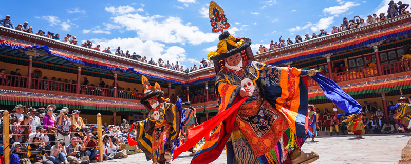

COVID-19 Update: Stay informed and plan your travel
States you travel to may have some restrictions in place. We request you to keep track of latest government mandated restrictions and plan your travel accordingly .

Hygienic Room
Staff Training & Preparedness
Sanitized Indoors
Safe Dining
Packages
Kashmir

05 Nights 06 Days
Kashmir Family Tour
Srinagar - Pahalgam - Gulmarg
Rs 8,999/-
HouseBoat
03 Nights 04 Days
Kashmir Houseboat Tour
Srinagar - Houseboat - Gulmarg
Rs 11,999/-
Vaishno Devi
09 Nights 10 Days
Kashmir With Vaishno Devi Tour
Srinagar - Gulmarg - Pahalgam - Patnitop - Jammu
Rs 19,999/-
Pahalgam
05 Nights 06 Days
Kashmir Pahalgam Tour
Srinagar - Pahalgam - Gulmarg
Rs 9,999/-
Gulmarg

04 Nights 05 Days
Kashmir Gulmarg Tour
Srinagar - Pahalgam - Gulmarg
Rs 8,999/-
Srinagar
04 Nights 05 Days
Srinagar Tour Package
Srinagar - Pahalgam - Gulmarg - Srinagar
Rs 12,999/-
Kashmir Valley
07 Nights 08 Days
Kashmir Valley Tour Package
Srinagar - Pahalgam - Gulmarg - Jammu
Rs 15,999/-
Patnitop
08 Nights 09 Days
Kashmir Package With Patnitop
Srinagar - Gulmarg - Pahalgam - Patnitop
Rs 17,999/-
About
We’re on a journey to transform ordinary trips into extraordinary ones.
We are your guide, bringing you personal experiences. Wherever your
travels take you, we’ll show you the unique and unmissable things to
do in your destination. With GetYourGuide on your side
(and in your pocket), creating memorable moments has never been easier.
Today, millions have used GetYourGuide to turn their travel dreams into reality.
And we’re just getting started. We're changing the way people connect to the
places they visit so anyone can create their dream vacation.
It’s your journey, your way.We are one of the leading Kashmir holidays, tour and travel packages operator in India. Providing luxury & budget kashmir travel packages for individuals, groups and couples. We arrange Kashmir tour packages from all major cities in India including Delhi, Hyderabad, Mumbai, Kolkata, Pune, Ahmedabad & Bangalore. Our Srinagar and Kashmir holiday packages have been designed keeping in mind your comfort and the value for money.
PLACES TO VISIT IN KASHMIR
Marked with snow-capped mountains and high passes, thick forests and dense natural vegetation, rivers springing with gaiety and the valley covered with mesmerizing colourful flowers, Kashmir is surely no less than a paradise on this planet.
SRINAGAR
This is the capital of Kashmir and connected by road and rail from Jammu Tavi railway station and the Srinagar airport. A night stay on a houseboat on the famous Dal Lake is a must for visitors here and if not, at least a Shikara boat ride will fill the hearts with freshness and serenity. Trek upto the Shankaracharya Temple and enjoy a mesmeric view of the valley down. The other not-to-miss features of Srinagar are the Mughal Gardens and the walk through the huge Chinar trees.Trek upto the Shankaracharya Temple and enjoy a mesmeric view of the valley down.

LEH-LADAKH
At 3500 metres above the sea, Leh is characterised by steep landscape, clear skies and snow-covered mountain peaks. From the Zanskar River to the Pangong Tso Lake, the highest motorable road on the Earth through the Khardungla Pass, the phenomenal Magnetic Hill and the many Gompas, this is surely not to miss in Kashmir.
ANANTNAG
This is the capital of Kashmir and connected by road and rail from Jammu Tavi railway station and the Srinagar airport. A night stay on a houseboat on the famous Dal Lake is a must for visitors here and if not, at least a Shikara boat ride will fill the hearts with freshness and serenity. Trek upto the Shankaracharya Temple and enjoy a mesmeric view of the valley down. The other not-to-miss features of Srinagar are the Mughal Gardens and the walk through the huge Chinar trees.Trek upto the Shankaracharya Temple and enjoy a mesmeric view of the valley down.
KARGIL
A small quiet town in the Ladakh district of Kashmir, the place hit the headlines during the infamous Kargil War between India and Pakistan. It is the second largest town in the region and is a must-visit for nature lovers and people who wish to see reminiscent signs of the 1999 war.
PULWAMA
Famous the world over for its saffron fields, the place is lovingly called the Dudha-Kul of Kashmir because of its milk production capacity. The Aharbal Waterfall, The Tarsar and Marsar Lake, the Kounsarnag Lake surrounded by the Panjal mountain ranges are key highlights of the place.
POONCH
The horizon of this place is marked by the 18th century Poonch Fort surrounded by greenery and white coloured mountain peaks. Some of the must visit places include the Baksh Sahib, Gurudwara Nangali Sahib and the 7 lakes of Girgan Dhok.
SONMARG
The word in the local language means the meadow of Gold. It is also called the Jannat or the heaven on Earth. Due to heavy snowfall the place is closed for tourists during the winters. It is the base for the Hindu pilgrimage of Amarnath. Treks, Zorbing, and river rafting are some activities to indulge in here.
HEMIS
This small village in Kashmir is mostly not crowded because is still relatively unknown to tourists. The terrain is filled with many monasteries and it is also home to the Hemis National Park where the snow leopard can be easily sighted. The Hemis Festival highlights the Buddhist culture surrounded by plenty of colours and masks.

Frequently Asked Questions about Jammu and Kashmir Packages
Q. Will there be snow in May in Kashmir?
A. If you are visiting Kashmir in May, you will not find snow in the lower reaches. However, you could still find snow in higher altitudes such as Pahalgam or Gulmarg. Otherwise the temperature will be pleasant in the lower reaches too.
Q. How can I go to Srinagar by train?
A. There are no direct trains to Srinagar from any of the major cities. If you really wish to travel by train only, then you can take a train till Jammu or Udhampur and travel from there to Srinagar by the local DEMU train or by bus or taxi. However, the most convenient way to travel to Srinagar is by air.
Q. What should I buy in Jammu Kashmir?
A. Some of the best things to buy while you are on a Kashmir tour package are Kashmiri dry fruits, saffron, honey, and salt tea. In addition, you can buy locally produced woollen textile products like shawls, stoles, ponchos etc. The traditional Kashmiri embroidery is famous across the world and you can buy embroidered apparel as well from Kashmir. Some high-quality souvenirs to bring back from Jammu Kashmir include walnut wood products, silver ware, copper and brass utensils and more.
Q. Which is the best place in Jammu Kashmir for a honeymoon?
A. If you have to pick one destination in Kashmir for a honeymoon stay, then we would recommend Gulmarg. This hill station is one of the most romantic and scenic of the various Kashmir tourist places, and offers enchanting views everywhere you look. Couples can spend quality time with each other and also indulge in exciting activities like gondola ride, skiing, snowboarding, etc.
Q. Where and when can I do skiing in Kashmir?
A. Gulmarg is one of the most popular skiing destinations in India. Mid-December to mid-March is the best time to visit Kashmir if you wish to hit the slopes in this town.
Q. How can I reach Vaishno Devi?
If you wish to visit Vaishno Devi, the closest railway station is at Katra. You can take a train here from Delhi and many other cities in India. For those planning to reach by air, the closest airport is Jammu, which is about 47 km. away. From Jammu airport, taxis to Katra are easily available.
a